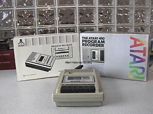

The Atari 410 Data Cassette
Drive
The Atari 410 came in 2 different versions, the above shown is the Atari
410a Tawain version. The Program Recorder was well built and
strudy with built in power supply and SIO cable, the 410 didn't need a
bukly external power pak like most other Atari 400/800 components, how
the SIO cable being built in and the Program Recorder having no daisy chain
port on the unit meant that it had to be placed at the end of the SIO chain.
The original idea of the SIO (Serial I/O) port on the Atari computers was
that it was to be used only for the Data cassette drive, however its functionality
was extended so that it could use all Atari peripherals including disk
drives, printers and modem. The Atari 410/410a
had a unique feature exclusively used by Atari. They could
play two seperate tracks on a tape, this proved very useful for interactive
programs where a user would run a program and would hear audio music/speech
while the other track would load the next part of the program.